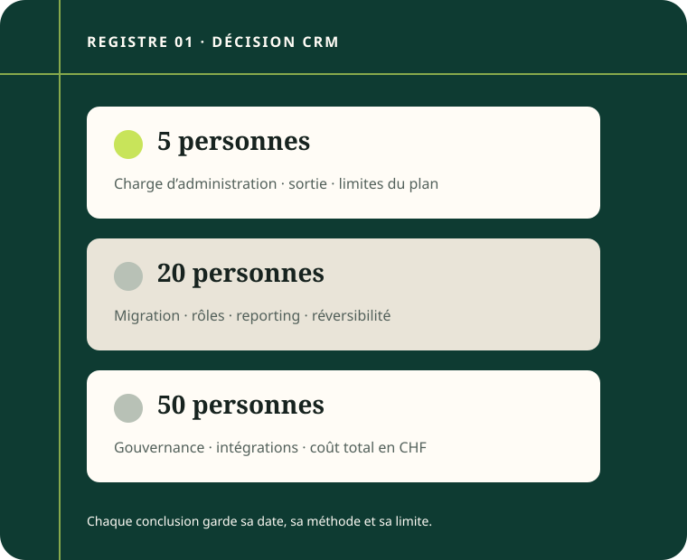

5 personnes
Prioriser l'adoption, le temps d'administration et la possibilité de repartir avec ses données.
Décision CRM pour PME CH/FR · état de préparation
Une grille de décision pour relier taille d'équipe, coût total, charge de mise en œuvre et réversibilité — sans classement générique ni verdict prématuré.
À vérifier avant publication Aucun test produit publié. Cette surface présente la méthode et ses limites, pas une recommandation d'outil.

Les besoins d'une équipe de 5, 20 ou 50 personnes ne se résument pas au nombre de licences. La méthode rend visibles les critères et les inconnues avant toute comparaison.
Prioriser l'adoption, le temps d'administration et la possibilité de repartir avec ses données.
Rendre explicites les rôles, la migration, le reporting et les règles de qualification.
Documenter la gouvernance, les intégrations et les hypothèses de coût total en CHF.
Les prix, plans et possibilités d'export évoluent. Une information non vérifiée ou datée reste une inconnue, non une conclusion.
La sortie, le consentement et la portabilité sont des critères à examiner au même titre que la licence. Cette page ne fournit pas d'avis juridique.
La rédaction Stack PME est assistée par IA. Elle ne remplace ni un essai documenté, ni une source à jour, ni la décision d'une équipe. Un lien affilié n'est pas actif dans ce canari local.
Essayer le parcours fictif